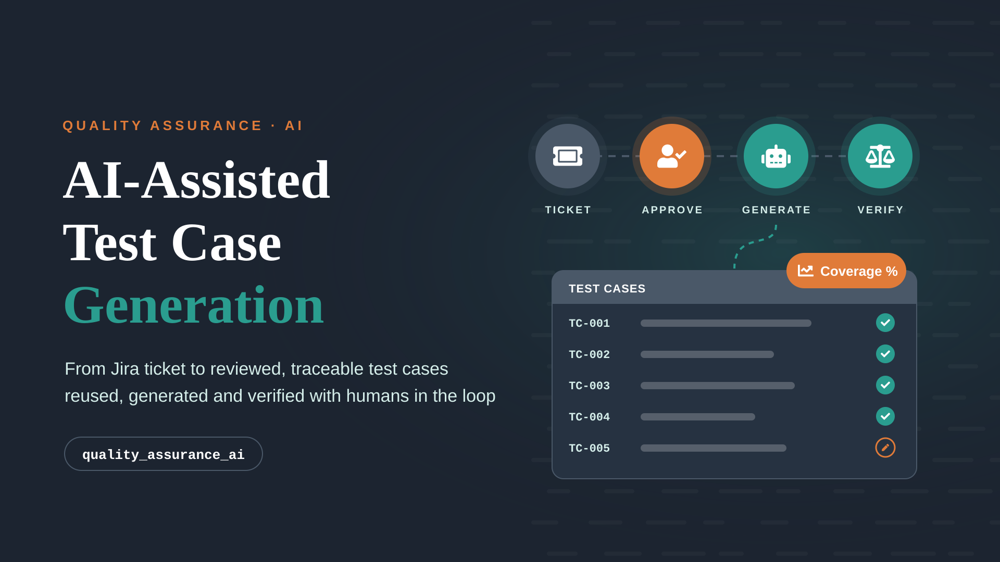
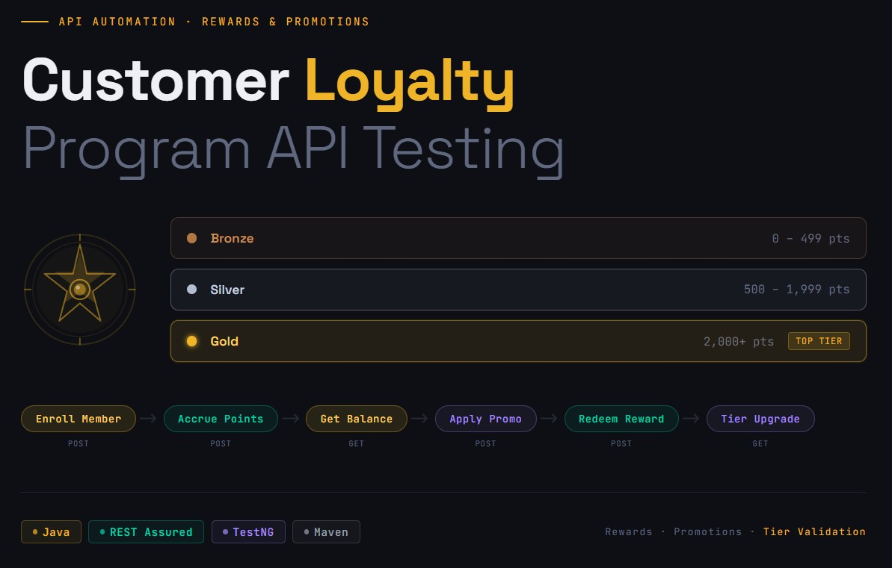
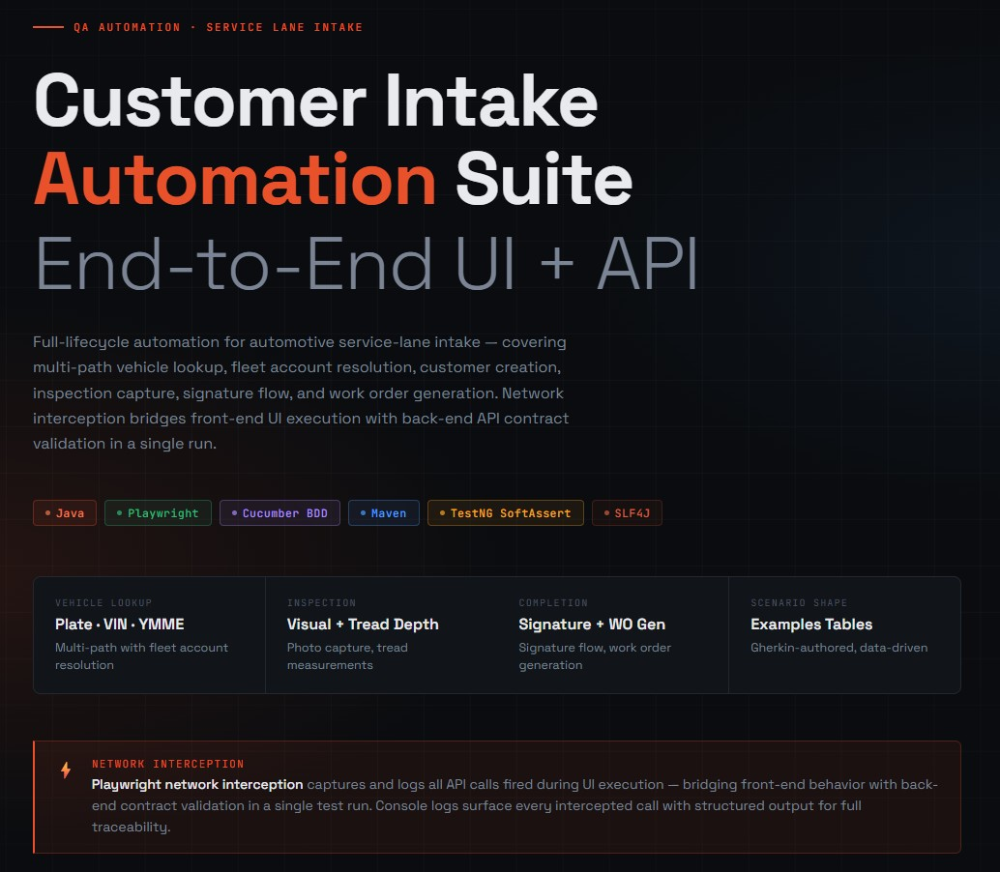
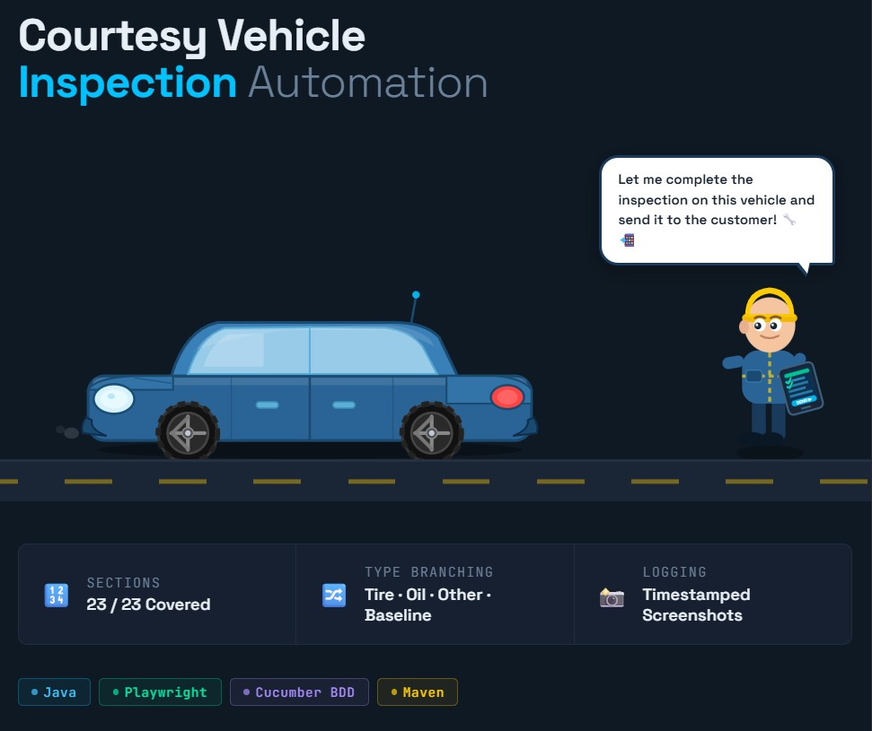
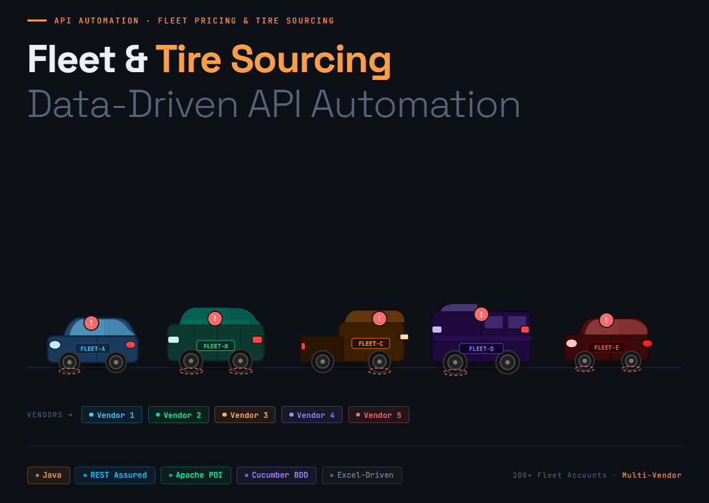

QA teams spend a large share of every sprint turning Jira tickets into manual test cases, often rewriting coverage that already exists, with no consistent way to measure quality. quality_assurance_ai applies generative AI to that work as a governed pipeline, with QA engineers approving its input and reviewing its output. It reads a ticket from Jira Cloud, turns it into structured, traceable requirements, and generates test cases in our defined test case format. Before writing anything new it checks a central test case repository, so existing tests are reused and only the gaps get new test cases. Every AI output is validated in code and scored by an independent AI reviewer for coverage, accuracy and hallucination, which makes test design faster, consistent and measurable.

A production-grade API automation framework that validates the complete loyalty lifecycle — from member enrollment and points accrual to promotion-driven reward issuance and tier progression. Built in Java with REST Assured under a BDD-driven, Maven-structured architecture, the suite enforces end-to-end contract integrity across every reward trigger, promotional rule, and redemption event. Parallel execution, environment-portable configuration, and structured transaction logging deliver full traceability from API call to business outcome in a single run.

End-to-end UI automation suite for Automotive service-lane workflow, built on Java, Playwright, Cucumber BDD, and Maven. Covers the full intake lifecycle — multi-path vehicle lookup (plate scan, VIN, YMME), fleet account resolution, customer creation, service selection, visual and tread depth inspection with photo capture, signature collection, and work order generation. Network interception captures and logs all API calls fired during UI execution, bridging front-end behavior with back-end contract validation in a single run. Gherkin-authored, Data-driven scenarios paired with per-assertion structured logging and timestamped full-page screenshots deliver end-to-end traceability across every test execution.

End-to-end UI automation suite for a 23-section Courtesy Vehicle Inspection, covering inspection-type branching, required-section enforcement, condition evaluations, brake and tread depth measurements, and Save & Print gate validation — each Inspection type running as an isolated scenario with structured per-assertion logging and timestamped screenshots

A dual-domain, data-driven API automation framework built in Java with REST Assured, Apache POI, and Cucumber, validating pricing contracts across 200+ fleet accounts and multi-vendor tire sourcing integrations within a single execution pipeline. Excel workbooks serve as the test data layer — fleet account rows drive contract rate assertions, fallback pricing validation, and payload integrity checks, while vehicle catalog records (year, make, model, engine, and internal vehicle code) parameterize sourcing calls against each vendor endpoint.

The primary objective of this assessment was to analyze the security vulnerabilities within Rekall's web applications, networks, and systems. This assessment aimed to identify exploitable weaknesses and offer actionable recommendations to enhance the overall security of the environment.
We utilized our established vulnerability testing methodology to evaluate all relevant web applications, networks, and systems within the scope.